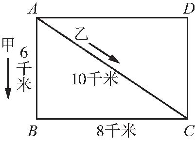
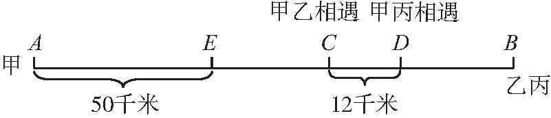
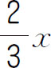
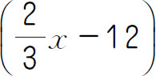
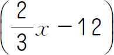
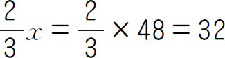

行程问题是反映物体匀速运动的应用题．行程问题涉及的变化较多，有的涉及一个物体的运动，有的涉及两个物体的运动，有的涉及三个物体的运动．涉及两个物体运动的，又有“相向运动”（相遇问题）“同向运动”（追及问题）和“相背运动”（相离问题）三种情况．但归纳起来，不管是“一个物体的运动”还是“多个物体的运动”，不管是“相向运动”“同向运动”，还是“相背运动”，它们的特点是一样的，具体地说，就是它们反映出来的数量关系是相同的，都可以归纳为：速度×时间＝路程．
【解题技巧】
1．行程问题中，物体运动的方向有相向、相背、同向．运动方向的不同，运算方式也不同．
2．行程问题中，物体出发的时间有同时和不同时，出发地有同地和不同地，需要仔细审题，在计算中加上或减去一些量．
3．行程问题中，物体运动的结果有多种，如相遇、相距多少、交错而过以及追及.运动结果的不同，解题时所列的式子也得注意．
总之，行程问题无论怎么变化，都离不开“三个量，三个关系”，即路程（s ）、速度（v ）以及时间（t ），简单行程、相遇问题和追及问题．抓住这两个“三”，行程问题就能够迎刃而解．当然，在分析复杂的行程问题时，画线段图也能帮助思考．
【基本公式】
相遇问题：速度和×相遇时间＝相遇路程
追及问题：速度差×追及时间＝相差路程
行程问题：速度×时间＝路程
时间相同时，路程比等于速度比；路程相同时时间比等于速度比的反比．

（第八届“希望杯”决赛）如图所示，长方形ABCD 的四个顶点均为汽车停靠站，甲车沿A→B→C→D→A→B→ ……逆时针行驶，速度为60千米/小时；乙车沿A→C→D→A→C→ ……逆时针行驶，速度为30千米/小时．两车每到一个站都停留2分钟．两车同时从A 站出发后，第一次在A 站相遇最少需多长时间？
【答案】 106分钟．
【解析】 甲车的速度为60千米/小时，即每分钟走1千米，乙车的速度为30千米/小时，即每分钟走0.5千米，分别求出两车回到A 点走的路程，从而求出走的时间，再加上停留的时间就是两车再次出发的时间，在A 站相遇最少时间是两车再次出发时间的最小公倍数减去停留的2分钟，据此计算即可解答．
甲车每分钟走1千米，相邻两次离开A 站相隔（8＋6＋8＋6）÷1＋2×4＝36（分钟）；乙车每分钟走0.5千米，相邻两次离开A 站相隔（8＋6＋10）÷0.5＋2×3＝54（分钟）；36和54的最小公倍数是108，108-2＝106（分钟）．因此第一次在A 站相遇最少需106分钟．
【举一反三1】
甲、乙两辆汽车同时从东西两地相向开出，甲车每小时行56千米，乙车每小时行48千米．两车在距中点32千米处相遇．东西两地相距多少千米？
（第十一届“希望杯”决赛）小小和成成约好周末一起去电影院看电影，两人从家到电影院的距离都是1.8千米，小小比成成早出发（匀速）12分钟，当成成出发时，小小离电影院还有1.26千米，小小到电影院后，再过2分钟，成成才到电影院，成成从家到电影院需___分钟．
【答案】 30．
【解析】 当成成出发时，小小离电影院还有1.26千米，也就是说成成在12分钟里行驶了1.8-1.26＝0.54（千米），先根据速度＝路程÷时间，求出小小的速度，进而依据时间＝路程÷速度，求出小小从家到电影院需要的时间，最后根据成成从家到学校需要的时间＝小小从家到电影院需要的时间-12分钟＋2分钟即可解答．由1.8千米＝1800米，1.26千米＝1260米，则1800÷［（1800-1260）÷12］-12＋2＝30（分钟）．因此成成从家到电影院需30分钟．
【举一反三2】
小平和小红同时从学校出发步行去小平家，小平每分钟比小红多走20米．30分钟后小平到家，到家后立即沿原路返回，在离家350米处遇到小红．小红每分钟走多少米？
（第十一届“走美杯”初赛）甲从A 地出发前往B 地，乙、丙两人从B 地出发前往A 地，甲行了50千米后，乙和丙才同时从B 地出发，结果甲和乙在C 地相遇，甲和丙在D 地相遇，已知甲的速度是丙的3倍，甲的速度是乙的1.5倍，CD 两地之间的距离是12千米．那么A B 两地之间的距离是___千米．
【答案】 130．
【解析】

如上线段图所示，要求A B 两地之间的距离，关键在于求EB 的距离．由“甲的速度是丙的3倍，甲的速度是乙的1.5倍”，设丙的速度为“1”，则甲的速度为“3”，乙的速度为“2”．设EC 的路程为x 千米，则甲乙相遇时乙行了

千米，即CB 的路程.当甲到达D 地时，甲从E 到D 行了（x ＋12）千米，丙行了
千米，根据甲、丙所行的路程比等于速度比，列式（x ＋12）∶
＝3∶1．解方程求出x ＝48，即EC 的路程为48千米，则此时CB 的路程为
（千米），因此AB＝AE＋EC＋CB ＝50＋48＋32＝130（千米）．【举一反三3】
小玲每分钟行100米，小平每分钟行80米，两人同时从学校和少年宫相向而行，并在离中点120米处相遇，学校到少年宫有多少米？
（第九届“走美杯”决赛）甲、乙两人分别从A 、B 两地同时出发，相向而行．他们相遇时，甲比乙多跑90米．相遇后乙的速度减少50％，甲到B 后立即调头，追上乙时离A 还有90米．那么，A 、B 间的路程为___米．
【答案】 450．
【解析】 设甲、乙第一次相遇时乙跑了x 米，则此时甲跑了（x ＋90）米，A 、B 两地的距离为（2x ＋90）米．第二次相遇时，距离A 地还有90米，则乙在两次相遇的时间内又跑了［（2x ＋90）-90-x ］＝x （米），即两段时间内乙跑了相同的距离（都是x 米），因为第二段时间内乙的速度减少50％，因此第二段时间是第一段时间的两倍．甲第二段时间跑了x ＋2x ＝3x （米），第一段时间跑了（x ＋90）米，因为甲的速度没有改变，所以3x ＝2×（x ＋90）．解得x ＝180．所以A 、B 两地相距450米．
【举一反三4】
甲、乙两人同时从A 地到B 地，甲每分钟走250米，乙每分钟走90米．甲到达B 地后立即返回A 地，在离B 地3.2千米处相遇．A 、B 两地之间相距多少千米？
1．（第九届“小机灵杯”决赛）早晨，小王骑车从甲地出发去乙地．中午12点，小李开车也从甲地出发前往乙地．下午1点30分时两人之间的距离是18千米，下午2点30分时两人之间的距离又是18千米．下午4点时小李到达乙地，晚上6点时小王到达乙地．小王是早晨几点出发的？
2．（第十一届“希望杯”初赛）从甲地到乙地，小张走完全程要2小时，小李走完全程要1小时，如果小张和小李同时从甲地出发去乙地，后来，在某一时刻，小张未走的路程恰好是小李未走的路程的2倍，那么此时他们走了几分钟？
3．甲以每小时4千米的速度步行去学校，乙比甲晚4小时骑自行车从同一地点出发去追甲，乙每小时行12千米，乙几小时可追上甲？
4．小狗和小猴参加100米预赛，当小狗跑到终点时，小猴才跑到90米处．决赛时，自作聪明的小猴突然提出：“小狗天生跑得快，我们站在同一起跑线上不公平，我提议把小狗的起跑线往后挪10米”．小狗同意了，小猴乐滋滋地想：“这样我和小狗就同时到达终点了！”亲爱的小朋友，你说小猴会如愿以偿吗？
5．（第九届“走美杯”初赛）相距180千米的A 、B 两地之间有一条单车道的公路（即不许超车）．有一天，一辆小轿车从A 出发，同时，一辆大货车在A 、B 之间的某地C 出发，都沿该公路驶向B 地．两辆车到达B 地所用时间之和为5小时．如果交换两车的出发位置，并让两车仍然同时出发，那么它们到达B 地所用时间之和仍为5小时．已知在没有货车挡道时小轿车的速度是大货车速度的3倍，那么B 、C 间的路程为多少千米？
6．（第十届“希望杯”决赛）甲、乙、丙三辆汽车从A 地去B 地，甲车的速度是60千米/时，乙车的速度是48千米/时，与此同时，一辆卡车从B 地去A 地，卡车在出发后6小时、7小时、8小时的时刻分别与甲、乙、丙三车相遇，求：
（1）甲车与卡车相遇时，甲车与乙车的距离．
（2）卡车的速度．
（3）丙车的速度．
7．（第九届“希望杯”决赛）A B 两地间有一条公路，甲、乙两辆车分别从A 、B 两地同时相向出发，甲车的速度是50千米/时．经过1小时，两车第一次相遇．然后两车继续行驶，各自到达B 、A 两地后都立即返回，第二次相遇点与第一次相遇点的距离是20千米．求：
（1）A 、B 两地的距离．
（2）乙车的速度．
8．（第五届“希望杯”初赛）A 、B 两地相距203米，甲、乙、丙的速度分别是4米/分钟、6米/分钟、5米/分钟．如果甲、乙从A 地，丙从B 地同时出发相向而行，那么在___分钟或___分钟后，丙与乙的距离是丙与甲的距离的2倍．